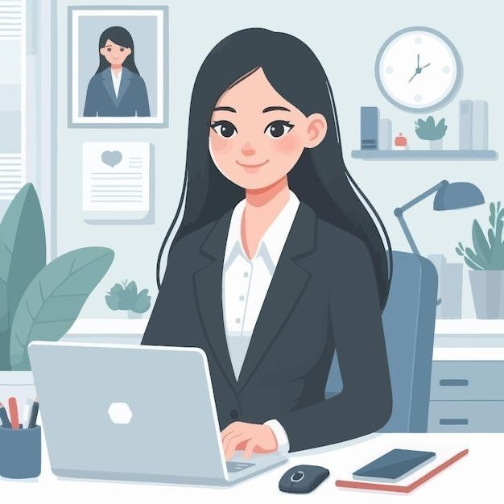

Bueno, hace poco e descubierto a que quiero dedicar el resto de mi vida, de las muchas cosas que quiero aprender, a todo lo que me gustaria dedicarme y despues de pensar mucho,lo sé. Desde siempre e querido hacer y me han gustado muchas cosas, pero en el mundo real, no puedo ser cantante, actriz, pintora, deportista, diseñadora grafica, bailarina, autora, diseñadora y estilista a la vez. Asi que se que quiero seguir estudiando,seguir aprendiendo. La verdad me gusta la idea de tener mi propio escritorio, hacer que el lugar de trabajo sea menos agotador, tengo mucho que aprender y mucha energia para enseñar y hacer las cosas, aunque no pueda hacer todo lo que quiero ser, porque no soy barbie, se que puedo hacer cosas que me gustan y vivir de ello, cosa que es lo más importante para mi. Decidi que estudiare psicologia organizacional, me gusta, los temas que vere, todo lo que aprendere, como y con quienes lo pondre en práctica, creo que esta bien. Pero en mi interior, deseo poder tener tiempo para mis pasatiempos.
